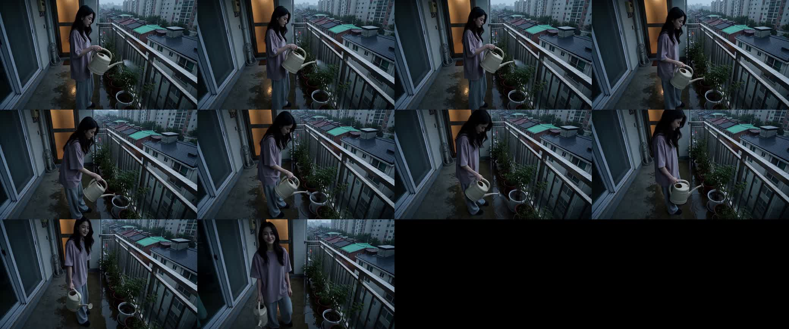
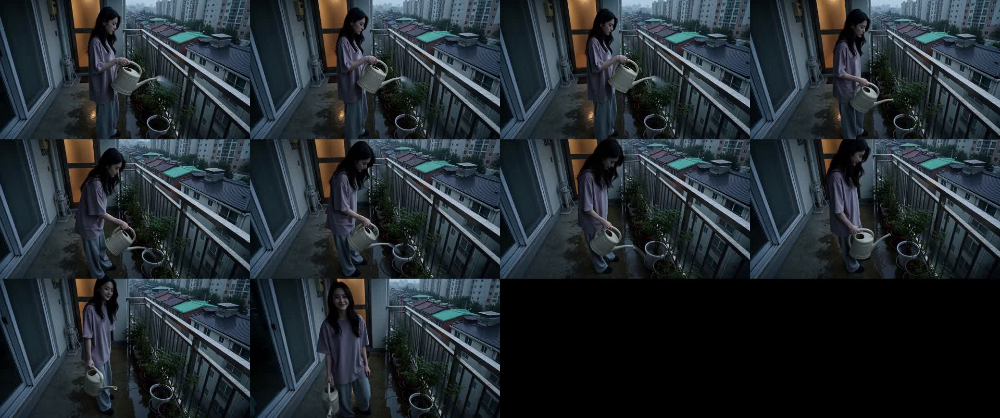
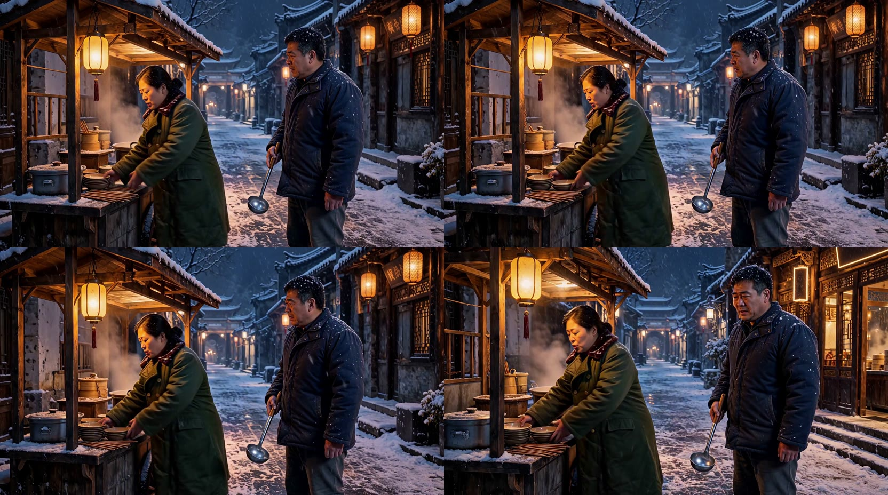

Part A · 精修是否有加成（同 prompt 同 seed，仅精修节点有无）
雪花：默认卡 #d6724d vs 精修卡 #4a989d seed 同值 = True
| 指标 | 默认卡 base | 精修卡 refiner | 差 |
|---|---|---|---|
| PSNR（refiner vs base，dB） | — | 29.331 | 均值；区间 26.97 ~ 31.09（Y 27.68） |
| 高频能量（首帧拉普拉斯归一） | 2.6410 | 2.7901 | +0.1491（更锐/颗粒多） |
| 采样求值次数 NFE | 10 | 11 | +1（sigma 尾部追加 extra_steps=1） |
| 采样耗时 server(s) | 464.5 | 517.3 | +11.4%（预测 +16.23%） |
| 配置（steps / transition / seed尾6） | 10 / 6 / 025885 | 10 / 6 / 025885 | 仅精修节点有无之差 |
左 = 默认卡 base
右 = 精修卡 refiner


浇花：默认卡 #8a26ef vs 精修卡 #7633e4 seed 同值 = True
| 指标 | 默认卡 base | 精修卡 refiner | 差 |
|---|---|---|---|
| PSNR（refiner vs base，dB） | — | 29.921 | 均值；区间 26.72 ~ 32.20（Y 28.20） |
| 高频能量（首帧拉普拉斯归一） | 2.4180 | 2.4769 | +0.0589（更锐/颗粒多） |
| 采样求值次数 NFE | 10 | 11 | +1（sigma 尾部追加 extra_steps=1） |
| 采样耗时 server(s) | 491.4 | 543.8 | +10.7%（预测 +16.23%） |
| 配置（steps / transition / seed尾6） | 10 / 6 / 025885 | 10 / 6 / 025885 | 仅精修节点有无之差 |

左 = 默认卡 base
右 = 精修卡 refiner


看片要点
- 雪花：精修路（#54）与 base（#53）同 prompt 同 seed，PSNR 均值为量化主据；高频能量 base→refiner 的变化方向决定「更干净还是更锐」。
- 浇花：第二素材用于验证加成是否跨素材稳定，而非雪花个例。
- NFE：refiner 在 sigma 尾部追加 extra_steps，采样求值次数增加是加成的成本面。
- 看片：盯静态边缘与暗部颗粒（精修作用区），蒸汽/运动元素两路本就分叉不作据。
Part B · 二采 6 步对比效果（雪花四路）
| 路 | steps | transition_step | seed 尾6 | server(s) | vs #53 | seed 来源 |
|---|---|---|---|---|---|---|
| 默认 6+4 #53 | 10 | 6 | 025885 | 464.5 | 基准 | 未下发·回退模板 |
| 精修卡 6+4+1 #54 | 10 | 6 | 025885 | 517.3 | +11.4% | 未下发·回退模板 |
| 6+6 #56 | 12 | 6 | 025885 | 559.4 | +20.4% | 未下发·回退模板 |
| 6+6 随机seed #57 | 12 | 6 | 131034 | 561.4 | +20.9% | 显式下发 |
seed 无关性（#56 vs #57 仅 seed 不同）：采样 559.4s vs 561.4s = 差 2.0s（0.36%） → 6+6 的开销与画质增益与 seed 无关。

左上 #53 默认 6+4
右上 #54 精修卡
左下 #56 6+6
右下 #57 6+6 随机seed
看片要点
- #56/#57 = transition_step 6→6（steps 10→12，低清6+高清6），对比 #53 默认 6+4。
- seed 无关性：#56 vs #57 仅 seed 不同，采样耗时差在 1% 内 → 6+6 的开销与画质增益都不是 seed 运气。
- 看片：高清段多 2 步主要改善近景人脸与暗部颗粒，用 quad 同刻 2x2 横向比。